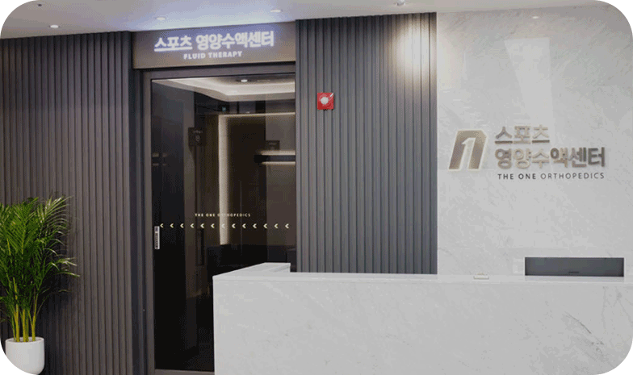

THE OEN ORTHOPDICS

스포츠영양클리닉
바르고 곧은 마음의 환자중심병원이 되기 위해 노력합니다.

바르고 곧은 마음의 환자중심병원이 되기 위해 노력합니다.
스포츠의학전문가가 운동선수 및 일반인들에 대한 영양상태평가 및 컨디션 체크
개인영양 상담 및 수액치료를 통한 리컨디셔닝을 진행합니다.
건강상태 체크
개인 맞춤 처방
개인공간에서 휴식
짧은 소요시간
믿음직한 정품사용
원인모를 두통과 피로감을 느낀다면
만성피로 영양 수액 프로그램
만성피로 영양수액
우리몸의 속성 산소를 제거하고 노화억제
효과를 나타내는 항상화 프로그램
항노화 영양수액
근육통완화, 에너지 보충 등 전문적으로
운동하시는 분들을 위한 프로그램
스포츠 영양수액
에너지보충, 면역력 증진등 신체 빠른 회복을
위한 면역력 강화 프로그램
면역력 강화 영양수액
더원정형외과의원은 직원 모두가 한마음 한뜻으로 서로를 존중하고 최고가 되기 위해 노력합니다.